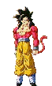
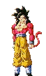

Project Overview: Embracing the Outdoors through Digital Design
Enjoy the Outdoors is a tribute to nature's vast beauty, brought into the digital space through a retro-inspired aesthetic that merges interactivity with visual storytelling. Inspired by the rugged landscapes of national parks, towering mountain ranges, and the timeless allure of old-school design, this project encapsulates the essence of exploration and discovery.
National Parks: A Digital Guide to Our Natural Treasures
The National Parks page is an interactive portal that encourages users to explore protected lands from the comfort of their screens. Here, users can filter parks by location and type, discovering national treasures they might otherwise overlook. Each park entry includes stunning visuals and concise details that highlight the uniqueness of each location, inviting viewers to experience the spirit of conservation.
Beyond the practical details, this section celebrates the raw beauty of nature. It’s a digital escape, crafted to inspire future adventures and instill an appreciation for the lands that have been preserved for generations. This page was designed with simplicity and functionality in mind, with a nod to vintage cataloging styles.
 

Mountains: Peaks of Challenge and Beauty
The Mountains page showcases the allure and challenges of mountain climbing through a minimalist interface. Each mountain profile offers essential details such as elevation, difficulty, and a short description of its unique traits. Additionally, it provides sunrise and sunset information to help hikers plan their adventures, symbolizing the journey from dawn to dusk as they conquer each peak.
This section was inspired by vintage expedition journals, focusing on the raw thrill of mountain climbing. Every mountain tells a story of resilience, a theme reflected in the robust, brutalist design of this page, which keeps distractions minimal and emphasizes the strength and solitude associated with mountain landscapes.

Books: Stories of Adventure and Exploration
The Books section brings together narratives that span the natural world, from biographies of nature pioneers to guides on wilderness survival. Each book cover can be double-clicked to reveal a detailed preview, giving users a scrollable, full-size view of selected pages. This digital reading experience combines the tactile sensation of flipping through a book with the ease of online navigation.
Inspired by brutalist principles, this section treats each book as a standalone artifact. With its bare-bones functionality and focus on typography, it lets the story of each book shine through without embellishment. The pages are raw, honest, and filled with images and words that capture the spirit of those who find solace and strength in the outdoors.

Events: Connecting with Nature through Community
The Events page is a curated collection of upcoming gatherings, workshops, and educational sessions dedicated to conservation and outdoor exploration. Each event flyer reflects a commitment to fostering community connections, creating opportunities for nature enthusiasts to learn, share, and grow. Flyers for events like RAWSCAPE and WILDROOTS serve as invitations to dive deeper into the wilderness.
This section’s visual design was inspired by bulletin boards and old event posters, blending the nostalgia of printed media with digital accessibility. It channels the excitement of finding a flyer for an event that promises to change your perspective on the natural world, all while reinforcing the importance of preservation and active engagement.
Photos: Capturing Nature’s Essence
The Photos page is a gallery of visuals capturing moments in nature, from quiet landscapes to dynamic wildlife scenes. This section is meant to transport users into the heart of nature, allowing them to experience the serenity and power of the outdoors through carefully selected imagery. Each photo is a reminder of the beauty that exists beyond screens and cityscapes.
The gallery design takes inspiration from old-school photo albums, where each image is cherished and intentionally placed. It’s a digital homage to the analog world, where photographs serve as windows into other realms and times. Users are encouraged to pause, admire, and let the images transport them to another place.

Gallery: Art and Nature Intersect
The Gallery page serves as a dynamic space where nature-inspired wallpapers blend with vintage aesthetics, creating a visual journey that is both immersive and nostalgic. The gallery cycles through curated wallpapers, each one highlighting a different aspect of the outdoors, from sprawling mountains to serene lakesides.
This page’s design is rooted in digital brutalism, with stark transitions and minimal overlays that allow each wallpaper to stand alone. The gallery reflects the timeless beauty of nature while maintaining a raw, unfiltered look, capturing the spirit of outdoor exploration in its most primal form.

Inspiration and Functionality
In creating Enjoy the Outdoors, the goal was to blend the aesthetics of vintage web design with modern functionality. Each page is a reflection of the rugged, untouched beauty of nature, with interactive elements like draggable windows and scrollable content. This project is a personal homage to the outdoors, combining aesthetics with user engagement to build a raw, immersive digital experience.
This site does not seek to smooth edges or perfect details but rather embraces the raw, unpolished spirit of the wilderness. It invites users to step into a virtual landscape that honors the past and celebrates the simplicity and strength of the natural world. With each click and scroll, the user is brought closer to the elements, allowing them to experience the outdoors in a way that is both nostalgic and forward-looking.